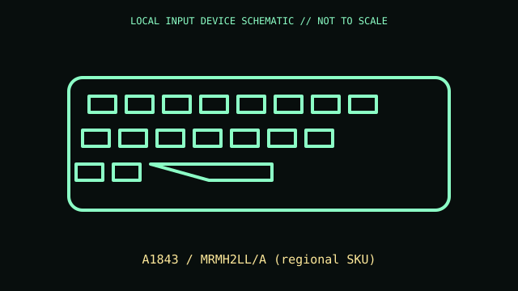

[ KEYBOARDS AND INTEGRATED POINTING DEVICES // IDENTIFIED COMPONENT ]
Apple Magic Keyboard with Numeric Keypad
Extended rechargeable Magic Keyboard with dedicated numeric keypad and navigation keys.

MODEL IDENTIFICATION: A1843 / MRMH2LL/A (regional SKU). Confirm complete SKU, package, region, and revision before compatibility claims.
Model specifications
| Catalog leaf | Keyboards and integrated pointing devices |
|---|---|
| Exact model / identifier | A1843 / MRMH2LL/A (regional SKU) |
| Physical mechanism and primary specifications | Bluetooth wireless; Lightning port for charging and pairing via cable; scissor key mechanism; internal rechargeable battery; full-width numeric keypad. |
| Compatibility and interface caveats | A1843 is Lightning-era keyboard; do not confuse with later USB-C models or Touch ID versions. Key mapping/media shortcuts and wired pairing behavior depend on host OS. |
| Revision identification | Record full product label, software/firmware version, and supplied accessories. Product-family versions may differ in connector, protocol, features, or host requirements. |
Preservation and service
Avoid prying sealed battery case; use correct Lightning cable and clean keycaps without liquid ingress.
Record condition and test setup separately from vendor specifications, including host OS and software.
Primary manufacturer sources
- Apple Magic Keyboard technical specificationsManufacturer documentation; confirm exact PID, regional suffix, and hardware revision on the unit.
- Apple keyboard manualsManufacturer documentation; confirm exact PID, regional suffix, and hardware revision on the unit.
Retain relevant manual revisions with the equipment record; vendor support pages can change.